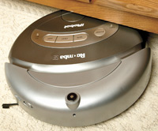
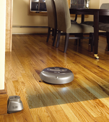
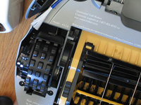
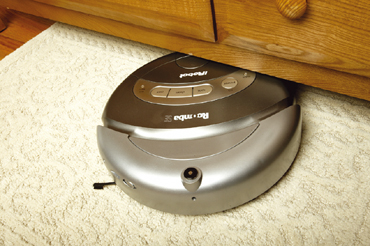
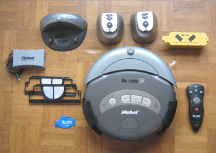

|
 |
L'aspirateur Roomba SE
390 € Livré en 36 heures Disponible |
La première version de Roomba a été le robot aspirateur le plus vendu au monde. Il revient aujourd'hui en France avec de nouvelles possibilités et de meilleures performances.
Le fonctionnement est très simple. Chargez la batterie, appuyez sur "Power" (marche) puis sur "Clean" (nettoyer) et Roomba commence à travailler. Il va d'abord tourner en rond puis parcourir la pièce à nettoyer. Il nettoie la maison et va même dans les endroits d'habitude inaccessibles comme sous le lit ou sous les commodes.
De lui-même, il contourne les obstacles et évite de tomber dans les escaliers. Grâce aux 2 unités de cloisonnement virtuel, il est possible de lui poser une barrière invisible pour, par exemple, ne nettoyer qu'une pièce même porte ouverte.

Le roomba SE fonctionne aussi bien sur le carrelage, la moquette ou le parquet (qui est d'ailleurs lustré par la brosse dixit des utilisateurs). Il gère aisément les changements de niveaux comme un tapis ou une barre de seuil à monter grâce à ses roues sur vérins.
Sa brosse rotative est une véritable ennemie pour les poils d'animaux et la poussière est collectée dans un bac à l'arrière du robot. Pour nettoyer parfaitement le long des murs et des obstacles, une mini-brosse (dépassant la largeur du robot) vient ramener la poussière sous la brosse principale afin d'être aspirée.

Le Roomba SE est autonome. Après 2 heures de travail ou lorsque sa batterie est déchargée, il se rend de lui-même sur son socle de recharge (à brancher sur le secteur), et se recharge en énergie. Au bout d'une heure, il est de nouveau prêt pour la mission suivante.
3 modes de fonctionnement différents permettent de choisir comment Roomba va nettoyer :

Le voyant "Dirt Detect" s'allume lorsque Roomba détecte beaucoup de poussière sur son passage. Il va alors insister sur la zone puis repasser en fonctionnement normal.
Roomba SE Le pack Roomba contient :
